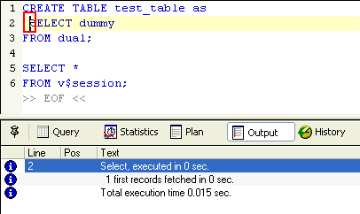

| Script -> Execute Current | Previous Top Next |
For example, in the following document, only the select statement (after the cursor position) will be executed ; the preceding create table statement and the second query will not be executed :

See Script Menu.